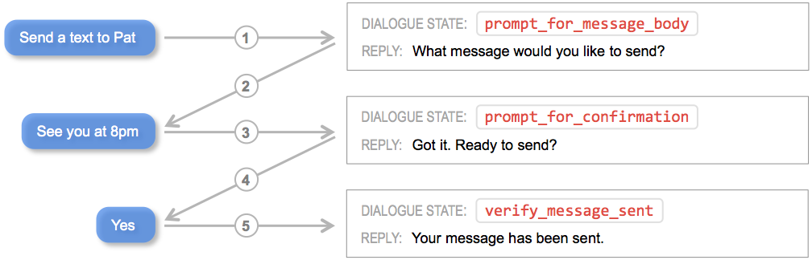
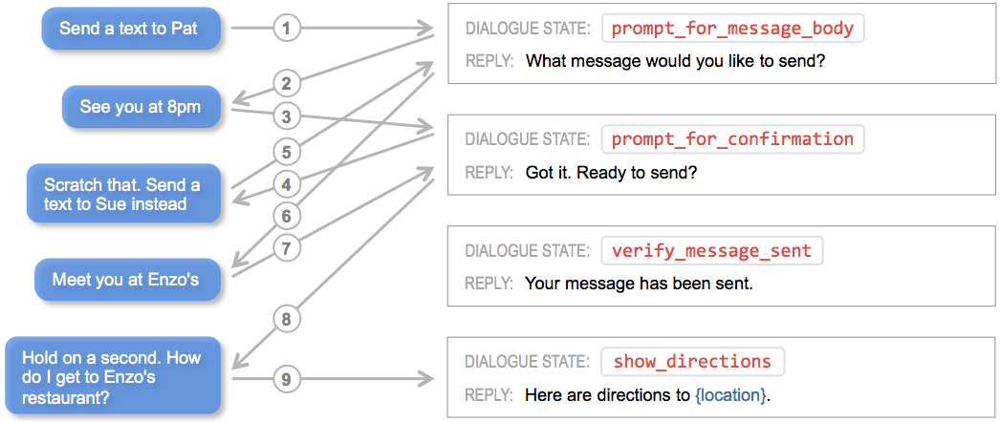
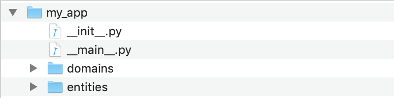

Step 4: Define the Dialogue State Handlers
Title goes here
Title goes here
Title goes here
Title goes here
Title goes here
Today’s commercial voice and chat assistants guide users through a conversational interaction in order to find information or accomplish a task. Conversational interactions consist of steps called dialogue states. For each dialogue state, a particular form of response is appropriate, and, particular logic may be invoked to determine certain parts of the content of the response. A set of dialogue state handlers define the logic and response required for every dialogue state that a given application supports.
A dialogue manager is at the core of every conversational application. The dialogue manager analyzes each incoming request and assigns it to a dialogue state handler which then executes the required logic and returns a response. The task of mapping incoming requests to appropriate dialogue states is called dialogue state tracking. Applying large-scale machine learning techniques for dialogue state tracking is an active area of research today. For now, however, nearly all commercial applications rely heavily on rule-based and pattern-matching approaches to accomplish dialogue state tracking.
For most use cases, the procedures described in this section suffice to configure the dialogue manager, which you need not deal with directly.
MindMeld Workbench provides advanced capabilities for dialogue state tracking, beginning with a flexible syntax for defining rules and patterns for mapping requests to dialogue states. And because Workbench is fully extensible, you can supplement MindMeld’s built-in pattern matching capabilities with whatever custom logic you need.
Specify the Superset of Dialogue States¶
Before you can begin to implement dialogue state handlers, you must first define the dialogue states your application requires. For simple conversational interactions, the set of dialogue states can be straightforward, as illustrated in the flow diagram below.
{kind=link}
The power of conversational applications lies in providing minimal constraints on what a user can say during an interaction. Users can shortcut directly to the functionality they want. They are also free to change topics or otherwise throw a curve ball at your application at any point in the interaction without warning. All of this means that in practice, dialogue flows can become quite convoluted, as suggested below.
{kind=link}
For our example, we need to define the dialogue states that the scripted conversational interaction in Step 2 requires. To capture the functionality we envision, we need four different dialogue states: welcome, send_store_hours, send_nearest_store, and say_goodbye, as shown in the diagram below.
{kind=link}
As the diagram illustrates, each dialogue state prescribes a natural language template that defines the form of the system response, and the template is populated on-the-fly using contextual state information gleaned from the conversation. The filled-in template represents an appropriate reply to, or a prompt for more information from, the user. The response may also include additional information to render client-side interactive elements such as image carousels or quick reply buttons.
Note
By convention, dialogue state names are verbs that describe the action your application should take at particular points in the interaction.
Create the Application Container¶
In MindMeld Workbench, every project is also a Python package and therefore must have an __init.py__ file at the root level. This package must contain an application container – a container for all of the logic and functionality for your application. This application container enumerates all of the dialogue states and their associated handlers, and should be defined as app in the application’s Python package. If you based your application structure on a blueprint, you will see two python files in the root directory: __init__.py and __main__.py. If not, you need to create these files with the following minimal implementation.
from mmworkbench import Application
app = Application(__name__)
@app.handle(intent='greet')
def welcome(request, responder):
responder.reply('Hello')
if __name__ == '__main__':
from . import app
app.cli()
Your directory structure should now resemble the following.
{kind=link}
The above code snippet illustrates the conventions for implementing dialogue state tracking and dialogue state handling logic in Workbench. The code is written to perform four steps:
- Import the
Applicationclass from the MindMeld Workbench package. - Define an
Applicationinstance to serve as the parent container for the application. - Using the
@app.handle()decorator, define a pattern which, when matched, invokes the associated handler function. - Specify the handler function
welcome()to define thewelcomedialogue state and return the desired response. We decided thatwelcomewould be one of our dialogue states based on the scripting exercise in Step 2. For now, we are responding with a simple “Hello”.
The patterns and associated handlers which you enumerate using this straighforward application structure constitute the core interaction logic for your application. The structure described above should suffice if you plan to contain all the functionality needed for your app’s interactions within a single file (__init__.py). It is often useful for large applications to break the application logic into multiple modules. Because the application is a Python package there is flexibility in how you accomplish this. Here is one approach which defines dialogue handlers in a handlers submodule.
from mmworkbench import Application
app = Application(__name__)
# import modules containing dialogue handlers
import my_app.handlers
__all__ = ['app']
from . import app
@app.handle(intent='greet')
def welcome(request, responder):
responder.reply('Hello')
Note
Avoiding Circular Imports
While the simple example above will work, it is possible to introduce circular imports with this structure. To avoid circular imports, you can create the application container in a submodule instead of the __init__.py module, as in the following example.
from my_app.root import app
# import modules containing dialogue handlers
import my_app.handlers
from mmworkbench import Application
app = Application(__name__)
from .root import app
@app.handle(intent='greet')
def welcome(request, responder):
responder.reply('Hello')
Implement the Dialogue State Handlers¶
We have already defined the dialogue handlers that the interaction in Step 2 requires.
Now, to finish implementing the dialogue handlers, we need to add the desired response for each dialogue state. As we do so, we will learn about capabilities of Workbench which are explained further in the User Guide.
First, consider the handler for the welcome dialogue state.
from mmworkbench import Application
app = Application(__name__)
@app.handle(intent='greet')
def welcome(request, responder):
responder.slots['name'] = request.context.get('name', '')
responder.reply('Hello, {name}. I can help you find store hours '
'for your local Kwik-E-Mart. How can I help?')
responder.listen()
Following convention, we use the dialogue state name, welcome, as the method name of the dialogue state handler, welcome().
The @app.handle() decorator specifies the pattern which must be matched to invoke the handler method. Here, the pattern specified is simply intent='greet'. In other words, if the natural language processor predicts that the intent of the incoming request is greet, the welcome() handler is invoked.
Every dialogue handler uses the responder object to specify the natural language text and any other data to be returned in the response. Text strings contained in this response can use templated expressions in standard Python string formatting syntax, like 'Hello, {name}.' in our example. Templated expressions are populated with real values before the response is returned to the client. Workbench uses the responder’s slots attribute to store the named string values which populate the templates.
The code snippet also introduces the request object, which stores all data passed in by the client to the application in the form of a dictionary attribute called context, as well as application logic state that Workbench uses to process the conversational interaction. The application logic state can include output data from the natural language processing models, aggregated state from multiple previous interactions, and user and session information. The request object is immutable to the dialogue handler since it’s the source of truth for all conversational information up to that point in the handler, so you cannot write to it. Instead, use the responder object to store any state information for future turns, resulting from operations in the current handler. See the User Guide for details.
Let’s follow this same approach to define handlers for the dialogue states send_store_hours, send_nearest_store, and say_goodbye. The resulting __init__.py file looks like the following.
from mmworkbench import Application
app = Application(__name__)
@app.handle(intent='greet')
def welcome(request, responder):
try:
responder.slots['name'] = request.context['name']
prefix = 'Hello, {name}. '
except KeyError:
prefix = 'Hello. '
responder.reply(prefix + 'I can help you find store hours '
'for your local Kwik-E-Mart. How can I help?')
responder.listen()
@app.handle(intent='get_store_hours')
def send_store_hours(request, responder):
active_store = None
store_entity = next((e for e in request.entities if e['type'] == 'store_name'), None)
if store_entity:
try:
stores = app.question_answerer.get(index='stores', id=store_entity['value']['id'])
except TypeError:
# failed to resolve entity
stores = app.question_answerer.get(index='stores', store_name=store_entity['text'])
try:
active_store = stores[0]
responder.frame['target_store'] = active_store
except IndexError:
# No active store... continue
pass
elif 'target_store' in request.frame:
active_store = request.frame['target_store']
if active_store:
responder.slots['store_name'] = active_store['store_name']
responder.slots['open_time'] = active_store['open_time']
responder.slots['close_time'] = active_store['close_time']
responder.reply('The {store_name} Kwik-E-Mart opens at {open_time} and '
'closes at {close_time}.')
return
responder.reply('Which store would you like to know about?')
responder.listen()
@app.handle(intent='find_nearest_store')
def send_nearest_store(request, responder):
try:
user_location = request.context['location']
except KeyError:
responder.reply("I'm not sure. You haven't told me where you are!")
responder.suggest([{'type': 'location', 'text': 'Share your location'}])
return
stores = app.question_answerer.get(index='stores', _sort='location', _sort_type='distance',
_sort_location=user_location)
target_store = stores[0]
responder.slots['store_name'] = target_store['store_name']
responder.frame['target_store'] = target_store
responder.reply('Your nearest Kwik-E-Mart is located at {store_name}.')
@app.handle(intent='exit')
def say_goodbye(request, responder):
responder.reply(['Bye', 'Goodbye', 'Have a nice day.'])
@app.handle(default=True)
def default(request, responder):
responder.reply('Sorry, not sure what you meant there. I can help you find '
'store hours for your local Kwik-E-Mart.')
responder.listen()
This code snippet introduces the QuestionAnswerer class. In Workbench, QuestionAnswerer is the module that creates and searches across a knowledge base of information relevant to your application. In this example, the send_nearest_store dialogue state relies on the QuestionAnswerer component to retrieve the closest retail store location from the knowledge base. The QuestionAnswerer is discussed further in the next section.
The snippet also demonstrates the use of a default handler. The @app.handle() decorator serves as a ‘catchall’ pattern that returns a default response if no other specified patterns are matched.
Now that our initial set of dialogue handlers are in place, we can begin building a knowledge base and training machine learning models to understand natural language requests.